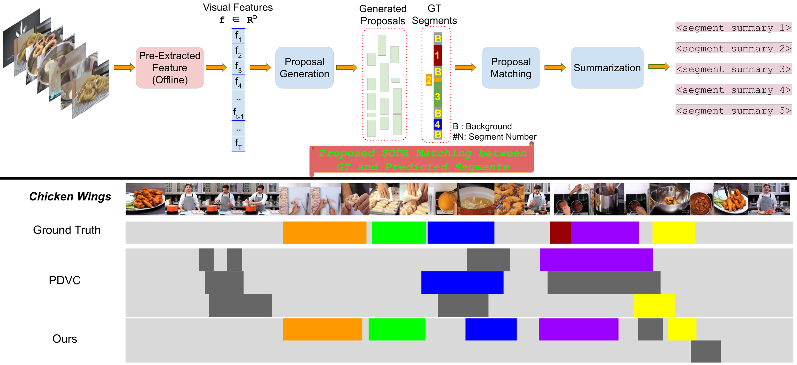

|
I am a CDT Ph.D. scholar at School of Informatics in University of Edinburgh and being supervised by Prof. Frank Keller and Dr. Laura Sevillia. My research interests lie at the intersection of Language and Vision. Specifically I enjoy working on:
I also enjoy reading works related to Geospatial data, large language models and how to make models more reliable. Previously, I have completed my Master in Computer Science (by research) at IIIT - Hyderabad, under the supervision of Prof. C.V. Jawahar and Facebook mentors Dr. Guan Pang, Dr. Saikat Basu. During Masters, I was part of Center of Visual Information Technology Lab (CVIT) and developed models to detect roads under occlusion in Satellite Imagery. I worked as Research Engineer at Facebook in Spatial Computing Team. I was designing, training, and evaluating extraction of connected road network with limited set of labels and large scale noisy labels.
|
|


|
|
|
|  |
pdf
suppl
abstract
bibtex
Understanding the steps required to perform a task is an important skill for AI systems. Learning these steps from instructional videos involves two subproblems: (i) identifying the temporal boundary of sequentially occurring segments and (ii) summarizing these steps in natural language. We refer to this task as Procedure Segmentation and Summarization (PSS). In this paper, we take a closer look at PSS and propose three fundamental improvements over current methods. The segmentation task is critical, as generating a correct summary requires each step of the procedure to be correctly identified. However, current segmentation metrics often overestimate the segmentation quality because they do not consider the temporal order of segments. In our first contribution, we propose a new segmentation metric that takes into account the order of segments, giving a more reliable measure of the accuracy of a given predicted segmentation. Current PSS methods are typically trained by proposing segments, matching them with the ground truth and computing a loss. However, much like segmentation metrics, existing matching algorithms do not consider the temporal order of the mapping between candidate segments and the ground truth. In our second contribution, we propose a matching algorithm that constrains the temporal order of segment mapping, and is also differentiable. Lastly, we introduce multi-modal feature training for PSS, which further improves segmentation. We evaluate our approach on two instructional video datasets (YouCook2 and Tasty) and observe an improvement over the state-of-the-art of ∼ 7% and ∼ 2.5% for procedure segmentation and summarization, respectively.
@InProceedings{batraBMVC2022pss, |
 |
pdf
suppl
poster
abstract
bibtex
code
Road network extraction from satellite images often produce fragmented road segments leading to road maps unfit for real applications. Pixel-wise classification fails to predict topologically correct and connected road masks due to the absence of connectivity supervision and difficulty in enforcing topological constraints. In this paper, we propose a connectivity task called Orientation Learning, motivated by the human behavior of annotating roads by tracing it at a specific orientation. We also develop a stacked multi-branch convolutional module to effectively utilize the mutual information between orientation learning and segmentation tasks. These contributions ensure that the model predicts topologically correct and connected road masks. We also propose Connectivity Refinement approach to further enhance the estimated road networks. The refinement model is pre-trained to connect and refine the corrupted ground-truth masks and later fine-tuned to enhance the predicted road masks. We demonstrate the advantages of our approach on two diverse road extraction datasets SpaceNet and DeepGlobe. Our approach improves over the state-of-the-art techniques by 9% and 7.5% in road topology metric on SpaceNet and DeepGlobe, respectively.
@InProceedings{Batra_2019_CVPR, |
|
|
pdf
suppl
abstract
bibtex
Overhead imageries play a crucial role in many applications such as urban
planning, crop yield forecasting, mapping, and policy making. Semantic
segmentation could enable automatic, efficient, and large-scale understanding of
overhead imageries for these applications. However, semantic segmentation of
overhead imageries is a challenging task, primarily due to the large domain gap
from existing research in ground imageries, unavailability of large-scale
dataset with pixel-level annotations, and inherent complexity in the task.
Readily available vast amount of unlabeled overhead imageries share more common
structures and patterns compared to the ground imageries, therefore, its
large-scale analysis could benefit from unsupervised feature learning
techniques.
@inproceedings{singhBMVC18overhead, |


{kind=link}
{kind=link}
{kind=link}